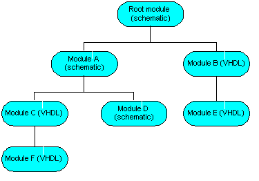

Capture provides the means to create electronic designs in
two media: as schematics or as VHDL models.
Schematic designs can include VHDL or Verilog models (one
or the other, not both) as lower level hierarchical
modules, but these models can only instantiate other models
(of the same type) at lower levels in the hierarchy.
Consider the following illustration:

Any schematic design module can include either schematics or VHDL/Verilog models as instantiated components. However, VHDL/Verilog design modules are limited to other modules of the same type as instantiated components. Hence, if the root module of your design is a VHDL model, all lower level modules must also be VHDL models.
|
|
|
In this section:
- Creating a Design
- Working with Title Blocks
- Opening a Design
- Creating a new VHDL or Verilog file
- Creating a Text File
- Flat vs. hierarchical designs
- Renaming a Design
- Saving and Closing a Design